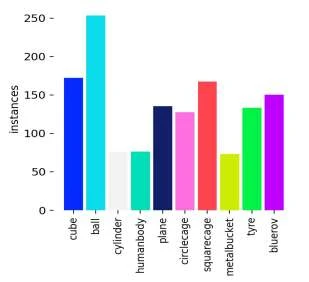
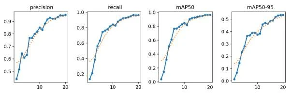
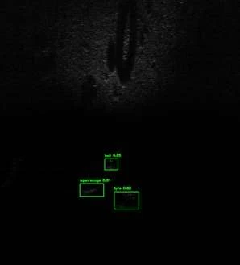
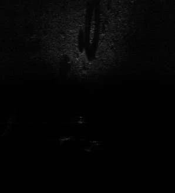

UBCAK 17 · 17th International Academic Studies Conference · 2025
Transformer vs. CNN: Benchmarking RT-DETR and YOLO Models on the UATD Dataset
Transformer ve CNN: UATD Veri Setinde RT-DETR ve YOLO Modellerinin Karşılaştırılması
Sercan Külcü
Computer Engineering Department, Giresun University, Türkiye
Sonar challengesRelated workUATDModelsAccuracy vs speedPer classErrorsSample
Full-text book · Use ← → or Space to navigate, F for full screen
Summary
At a Glance
A Transformer detector against two small CNN detectors on 9,200 forward-looking sonar images: RT-DETR-L is the most accurate, YOLOv8n the best trade-off for small underwater robots.
Best mAP50-950.535RT-DETR-L
YOLOv8n mAP50-950.507YOLOv12n: 0.481
Inference time2.7 msYOLOv8n · RT-DETR-L 24.1 ms
Compute103.5GFLOPs for RT-DETR-L vs 6.3–8.1
Transformer
Global context pays off on objects with large shadows and distinct outlines, such as plane and ball.
CNN
7–9× faster with a tenth of the parameters or fewer, which suits resource-limited vehicles.
Next
Hybrid designs that combine Transformer accuracy with YOLO efficiency.
Introduction
Why Sonar Images Are Hard
Cameras fail in turbid water; forward-looking sonar (FLS) sees by sound and works in the dark.
FLS images have low resolution, heavy noise and blurry object boundaries; targets are small and sparse.
Signal attenuation and seabed reverberation add clutter; there is no colour or texture, only echoes and acoustic shadows.
Detectors must also fit on autonomous underwater vehicles (AUVs) with limited power and compute.
Does a Transformer's global context beat a CNN's local features on sonar, and at what cost?
Introduction · Related Work · Interactive
Detectors for Forward-Looking Sonar
Results as reported by each study; datasets and metrics differ. Click a column header to sort.
Model
Type
Task
Reported result
Study
FLSD-Net
CNN (YOLOv8)
detection
higher mAP on UATD-2022, less overfitting
Yang et al., 2024
Fast-YOLOv5
CNN (YOLOv5)
detection
mAP 81.2%, 200 FPS
Yang et al., 2023
SonarNet
CNN-Transformer hybrid
segmentation
54.5% mIoU, 215.5 FPS
He et al., 2024
FA-YOLO
CNN (YOLOv5)
detection
98.1% mAP on UATD
Ding and Liu, 2023
Adapted YOLOv7
CNN (YOLOv7)
detection
+15% mAP over YOLOv5
Ge et al., 2024
HMSeg
hybrid encoder-decoder
segmentation
state-of-the-art mIoU on UATD-Seg
Wang et al., 2025
DA-YOLOv7
CNN (YOLOv7)
detection
99.15% mAP on SCTD
Chen et al., 2024
MFF-YOLOv7
CNN (YOLOv7)
detection
robust on UATD, URPC, SCTD
Zheng et al., 2024
AquaYOLO
CNN (YOLOv8)
detection
better sonar feature extraction
Lu et al., 2025
LS-DETR
Transformer
detection
+2.8% accuracy on UATD
Wang et al., 2025
YOLO-DCN
CNN (YOLOv3)
detection
+10.2% mAP on irregular objects
Hou, 2024
Materials and Methods · Fig. 1
The UATD Dataset
9,200 raw sonar images from a Tritech Gemini 1200ik multibeam FLS, recorded in lakes and shallow water in Maoming and Dalian, China.
BMP images, 1024×1428, 720 kHz or 1200 kHz, 5–25 m range; bounding boxes in XML.
Split: 7,600 training, 800 test_1, 800 test_2.
95 images moved from training to test to balance the human body and metal bucket instances.
Validation: 895 images, 1,362 instances.
10 classes: cube, ball, cylinder, human body model, tyre, circle cage, square cage, metal bucket, plane model, BlueROV.

Fig. 1: instances per class
Materials and Methods · Table 1
The Contenders
RT-DETR-L (Transformer)
Real-time DETR: attention links every image region with every other and predicts a set of boxes directly, without non-maximum suppression. 32.0 M parameters.
YOLOv8n and YOLOv12n (CNN)
Nano one-stage detectors built on local convolutional features; YOLOv12 adds attention blocks. 3.0 M and 2.6 M parameters.
RT-DETR-L training
Library
Ultralytics 8.3.167
Initialization
COCO, 926 of 941 weights transferred
Epochs
20, no early stopping
Image size
640×640
Batch size
4 (GPU memory limit)
Optimizer
AdamW, lr 0.000714, momentum 0.9
Loss
GIoU + classification + L1
Augmentation
mosaic 1.0, HSV, horizontal flip 0.5
GPU
NVIDIA GeForce RTX 3050 (6 GB)
Results · Table 2 · Interactive
Accuracy against Speed
Same validation set for all models; inference time on an RTX 3050. Pre- and post-processing (about 0.3 ms and 1.8–5.1 ms) are similar across models and not included.
Results · Table 3 · Interactive
Class-Wise Comparison
RT-DETR-LYOLOv12nYOLOv8n
Right column: RT-DETR-L minus the better YOLO model. In mAP50-95 its largest leads are on human body (+0.076) and cylinder (+0.069); plane (0.650) and ball (0.607) are its best classes. Only on metal bucket does YOLOv8n come out ahead.
Results · Fig. 2 · Interactive
Where RT-DETR-L Errs
Hover or tap a cell. Columns are ground truth and each column sums to 1; rows are predictions.
Diagonal: 0.92 (tyre) to 1.00 (cylinder).
Bottom row, missed objects: mainly tyres (6%).
Right column, false alarms on background: mostly labelled ball (27%), tyre (19%), circle cage (16%) or cylinder (13%). Small echoes are easily confused with seabed clutter.
Results · Fig. 3
Training Dynamics of RT-DETR-L

Precision, recall, mAP50 and mAP50-95 over 20 epochs
Epochs 1–10
Rapid increase in all metrics: COCO pretraining transfers to sonar quickly.
Towards epoch 20
The curves flatten into a plateau; more epochs would bring little.
Results · Fig. 4 · Interactive
A Sample Detection


detectionsraw
Drag the divider to compare the raw scan and the output of RT-DETR-L.
The raw scan shows acoustic shadows and faint silhouettes in shallow water.
Three objects are found: ball (0.85), square cage (0.81) and tyre (0.82).
Objects are a few dozen pixels in a large, mostly dark frame: small and sparse targets.
Discussion
Which Model, When?
RT-DETR-L
highest mAP50-95 (0.535) and recall (0.964)
global context helps with shadows and outlines: plane 0.650, ball 0.607
for precision-critical tasks: inspection, search, offline analysis
cost: 103.5 GFLOPs, 24.1 ms per image
YOLOv8n
mAP50-95 0.507, close to RT-DETR-L
consistent across classes; best mAP50 on cube, ball, circle cage and metal bucket
2.7 ms per image with 8.1 GFLOPs
best trade-off for resource-limited underwater robots
YOLOv12n is the lightest (6.3 GFLOPs) but trails in accuracy (0.481), especially on irregular shapes such as cylinder (0.397) and human body (0.429).
Discussion and Conclusions
Conclusion
Transformer-based RT-DETR-L is the most accurate detector on UATD, with mAP50-95 0.535.
CNN-based YOLO models are 7–9× faster and much lighter; YOLOv8n balances accuracy and speed best.
Balancing the class distribution made the evaluation fairer for underrepresented classes such as metal bucket.
Future work: hybrid models that combine Transformer accuracy with YOLO's lightweight design.
Discussion
Check Questions
Name three properties of FLS images that make detection harder than in camera images.
Why are the models almost equal at mAP50 but clearly different at mAP50-95?
Which model would you put on a small AUV, and why?
In the confusion matrix, what does the right-hand "background" column measure?
Why might global context help on the plane class?
Show answers
Low resolution, heavy noise, blurry boundaries, no colour or texture, small sparse targets, reverberation.
At IoU 0.5 a rough box is enough; stricter thresholds reward precise localization, where RT-DETR-L is better.
YOLOv8n: near RT-DETR-L accuracy at 2.7 ms and 8.1 GFLOPs.
False alarms: how detections on empty background are distributed over the predicted classes.
Its outline and large acoustic shadow spread over a wide area; attention relates distant parts of the image.
References
Selected References
Xie, K., Yang, J., Qiu, K. (2022). A dataset with multibeam forward-looking sonar for underwater object detection. Scientific Data, 9, 739.
Wang, J. et al. (2025). LS-DETR: Lightweight transformer for object detection in forward-looking sonar images. IEEE Geosci. Remote Sens. Lett., 22, 1–5.
Yang, H. et al. (2024). A lightweight underwater target detection network for forward-looking sonar images. IEEE Trans. Instrum. Meas., 73, 1–13.
He, J. et al. (2024). Efficient SonarNet: Lightweight CNN-grafted vision transformer embedding network for forward-looking sonar image segmentation. IEEE Trans. Geosci. Remote Sens., 62, 1–17.
Lu, Y. et al. (2025). AquaYOLO: Enhancing YOLOv8 for accurate underwater object detection for sonar images. J. Mar. Sci. Eng., 13(1), 73.
See the full paper for the complete reference list. Figures on these slides are from the paper.
Thank You
Transformer vs. CNN: Benchmarking RT-DETR and YOLO Models on the UATD Dataset
How to cite: Külcü, S. (2025). Transformer vs. CNN: Benchmarking RT-DETR and YOLO Models on the UATD Dataset. In 17th International Academic Studies Conference (UBCAK) Full Text Book, pp. 328–337. Asos Publishing.